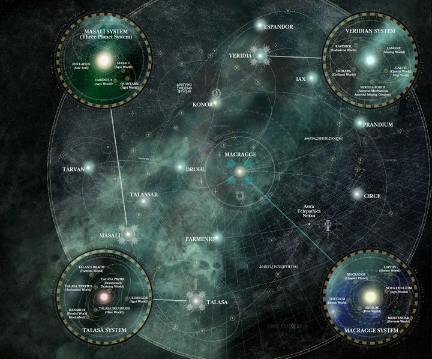
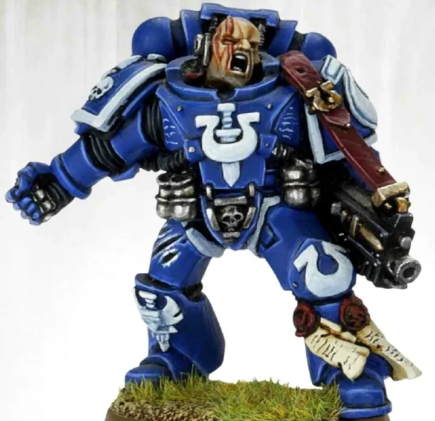
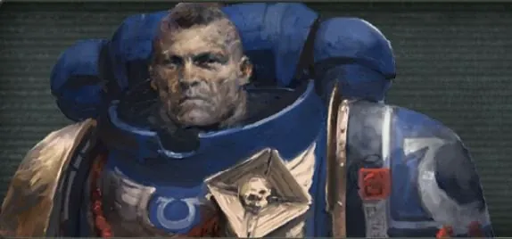
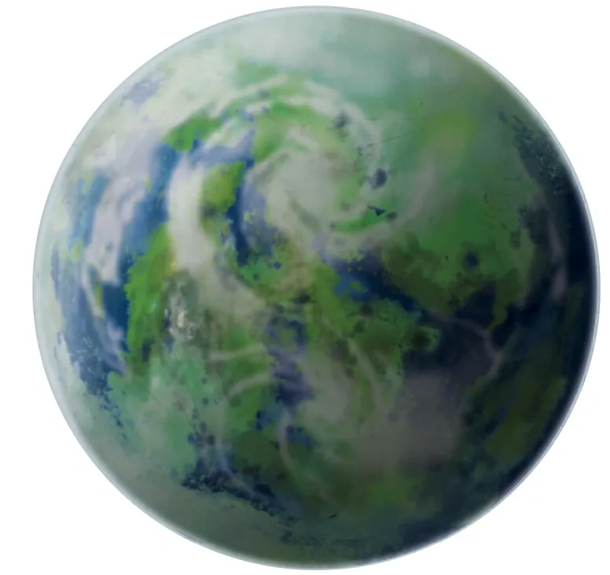

01ภาพรวม

ลูกหลานของ Roboute Guilliman — Chapter ต้นแบบที่ยึดตำรา Codex Astartes และเป็นเสาหลักของจักรวรรดิ
02ต้นกำเนิด
Legion ที่ 13 ภายใต้ Roboute Guilliman ผู้เติบโตบน Macragge เป็น Legion ที่ใหญ่ที่สุดและบริหารดีที่สุดในยุค Great Crusade หลัง Heresy ถูกแบ่งเป็น Chapter จำนวนมาก (ทายาทของ Ultramarines ถูกเรียกรวมว่า 'Primogenitors') มากกว่า Legion อื่น
03เนื้อเรื่องเจาะลึก
Macragge และการพบกันของบิดาและบุตร
Guilliman ตกลงบนดาว Macragge และได้รับการเลี้ยงดูโดยกงสุล Konor ผู้สอนการปกครองและการทหาร เมื่อจักรพรรดิพบเขา Macragge คือดาวที่เจริญรุ่งเรืองที่สุดดวงหนึ่ง Legion ที่ 13 จึงได้ทั้งผู้นำอัจฉริยะและแหล่งผู้สมัครชั้นดี กลายเป็น Legion ที่ใหญ่ที่สุด
การทรยศที่ Calth และ Imperium Secundus
Word Bearers ลอบโจมตี Ultramarines ที่ Calth ทำให้ Legion สูญเสียมหาศาล และถูกตัดขาดจาก Terra ด้วยพายุ Ruinstorm Guilliman เชื่อว่า Terra อาจล่มแล้ว จึงตั้ง "Imperium Secundus" จักรวรรดิสำรองชั่วคราว — การตัดสินใจที่ทำให้พี่น้องบางคนสงสัยว่าเขาอยากเป็นจักรพรรดิเอง
หมื่นปีแห่งการรอคอย
หลังถูก Fulgrim แทงด้วยดาบพิษ ร่างของ Guilliman ถูกเก็บในสนาม Stasis บน Macragge หมื่นปี ประชาชนมาแสวงบุญ มีข่าวลือว่าบาดแผลของเขาค่อย ๆ หาย จนเมื่อ Cadia ล่ม เขาได้ฟื้นคืนมาด้วยการร่วมมือของ Aeldari กลุ่ม Ynnari, Adepta Sororitas และ Belisarius Cawl
ปกป้อง Ultramar อีกครั้ง
หลังฟื้น Guilliman นำ Indomitus Crusade แล้วต้องกลับมาป้องกัน Ultramar จาก Death Guard ในสงคราม Plague Wars ที่ Mortarion พี่ชายของเขาบุกเข้ามาด้วยตัวเอง
04ยุค 30K — ในยุค Great Crusade และ Horus Heresy

ยุค 30K เป็น Legion ขนาดกว่า 250,000 นาย ปกครองอาณาจักร Ultramar 500 ดาว ถูก Word Bearers ทรยศที่ Calth และตั้ง Imperium Secundus เมื่อคิดว่าจักรพรรดิอาจสิ้นพระชนม์
ดูภาพรวมยุค 30K ทั้งหมดที่ เนื้อเรื่องยุค 30K และความต่างของสองยุคที่ เปรียบเทียบ 30K vs 40K
05นิสัยและวัฒนธรรม
- มีวินัย ยืดหยุ่น และยึดหลักการ — ไม่ใช่ทหารหุ่นยนต์ แต่เป็นนักยุทธศาสตร์ที่ปรับตัวเก่ง
- ถือว่าตัวเองเป็นผู้ปกป้องพลเรือนและอารยธรรม ไม่ใช่แค่นักฆ่า
- ภูมิใจใน Ultramar ดินแดนที่เจริญที่สุดแห่งหนึ่งในจักรวรรดิ
06จุดที่น่าสนใจ
- ยุค 40K มีเกราะสีน้ำเงินเหมือนยุค 30K
- ใน 999.M41 ได้ Primarch กลับมาเป็นครั้งแรกในรอบหมื่นปี
- เป็น 'หน้าตา' ของ Space Marines ในสื่อแทบทุกชนิด
07ความสามารถพิเศษ
สิ่งที่ทำให้ Ultramarines แตกต่างจากทัพอื่น — ทั้งพลังที่ติดตัวมาทั้งเผ่า/ทัพ และความสามารถของบุคคลสำคัญ
ของทั้งเผ่า/ทัพ

ปรมาจารย์แห่ง Codex
Ultramarines ฝึกทุกคนให้เข้าใจหลักการของ Codex Astartes อย่างลึกซึ้ง จึงปรับตัวได้กับทุกสถานการณ์ — ไม่ได้เก่งแค่อย่างเดียว แต่ "ไม่มีจุดอ่อน" เป็นกองทัพที่สมดุลที่สุด

อาณาจักร Ultramar
Ultramarines ปกครองอาณาจักรดาว Ultramar ที่มีระบบการปกครองดีที่สุดในจักรวรรดิ ประชาชนทุกคนได้รับการฝึกทหาร มีทรัพยากร โรงงาน และผู้สมัครคุณภาพสูงจากโรงเรียน Agiselus ทำให้ Chapter ฟื้นตัวจากความสูญเสียได้เร็วมาก

Gene-seed ที่บริสุทธิ์ที่สุด
Gene-seed ของ Guilliman แทบไม่มีข้อบกพร่อง จึงถูกเลือกใช้สร้าง Chapter ใหม่มากที่สุด เชื่อว่ามากกว่า 1 ใน 3 ของ Chapter ทั้งหมดสืบเชื้อสายจาก Ultramarines
ของบุคคลสำคัญ

Roboute Guilliman
นักยุทธศาสตร์และผู้ปกครองPrimarch ผู้คิดได้พร้อมกันหลายเรื่อง จัดการทั้งสงครามและการบริหารจักรวรรดิ ถือดาบ Emperor's Sword และ Hand of Dominion ถุงมือที่ยิงได้

Varro Tigurius
หยั่งรู้อนาคตหัวหน้า Librarian ผู้มองเห็นอนาคตผ่านนิมิต สวม Hood of Hellfire ที่ขยายพลังจิต แต่เคยมองไม่เห็นการมาของ Hive Fleet Behemoth เพราะ "เงาใน Warp" ของ Tyranids

Cato Sicarius
ดาบแห่ง Talassarกัปตันกองร้อยที่ 2 ผู้ทะเยอทะยาน ถือดาบ Talassarian Tempest Blade ขึ้นชื่อเรื่องการบุกหัวหอกและความมั่นใจในตัวเองสูง

Uriel Ventris
รอดกลับจากดาวปีศาจกัปตันผู้คิดนอกกรอบที่ถูกเนรเทศไปดาวปีศาจ Medrengard และรอดกลับมา ต่อมาได้ผ่าน Rubicon Primaris
08หน่วยและบทบาทในกองทัพ
Ultramarines คือต้นแบบของ Codex Astartes จึงมีตำแหน่งครบตามตำรา (ดูหน่วยทั่วไปในหน้า Space Marines) แต่มีหน่วยและตำแหน่งเกียรติยศเฉพาะของตัวเองที่น่าสนใจ

Lord Macragge
ลอร์ดแมคแคร็กจ์ตำแหน่งของ Chapter Master แห่ง Ultramarines (ปัจจุบันคือ Marneus Calgar) ซึ่งเป็นทั้งแม่ทัพและผู้ปกครองดาวทั้งหมดในอาณาจักร Ultramar

Victrix Honour Guard
วิกทริกซ์ ออนเนอร์การ์ดองครักษ์ของ Lord Macragge คัดจากทหารผ่านศึกที่เก่งที่สุด สวมเกราะประดับทองและผ้าคลุม ถือดาบ Power Sword

Tyrannic War Veterans
ทหารผ่านศึกสงครามไทรานิดทหารที่รอดจากศึก Battle of Macragge (745.M41) กับ Hive Fleet Behemoth มีประสบการณ์การรบกับ Tyranids มากที่สุดใน Chapter สวมหมวกสีแดง
Chief Librarian
หัวหน้า Librarianหัวหน้าหอ Librarius ของ Chapter — ของ Ultramarines คือ Varro Tigurius ผู้หยั่งรู้อนาคตได้ แม้จะมองไม่เห็นการมาของ Tyranids ในศึก Macragge

Chapter Ancient
เอนเชียนต์ประจำ Chapterผู้ถือธงผืนใหญ่ของ Chapter (Chapter Banner) ซึ่งมีรายชื่อวีรกรรมนับพันปี ธงนี้ออกสนามเฉพาะศึกที่สำคัญที่สุดเท่านั้น
ตำแหน่งมาตรฐานของ Space Marine (Captain, Apothecary, Techmarine ฯลฯ) ดูได้ที่ หน่วยและบทบาทของ Space Marines และกฎการจัดองค์กรที่ Codex Astartes
09วีรกรรมและเหตุการณ์สำคัญ
Battle of Macragge
ยับยั้ง Hive Fleet Behemoth — ทหาร 1st Company ทั้งหมดพลีชีพในการป้องกันขั้วโลก
Damnos
พ่ายต่อ Necrons ครั้งแรก ก่อนกลับไปชำระแค้นในสงครามครั้งที่ 2
การฟื้นคืนของกิลลิมัน
ร่วมกับ Cawl และ Ynnari ปลุก Primarch ให้ฟื้น
Plague Wars
ป้องกัน Ultramar จาก Mortarion และ Death Guard
10ตัวละครสำคัญ
Marneus Calgar
Chapter Master · Lord Macraggeผ่าน Rubicon Primaris กลายเป็น Primaris และนำ Operation Imperator
Roboute Guilliman
Primarchผู้สำเร็จราชการจักรวรรดิ นำ Indomitus Crusade
11ยุค 40K — สหัสวรรษที่ 41
ยุค 40K Ultramarines ยังเป็น Chapter ที่แข็งแกร่งที่สุดใน Ultima Segmentum ผ่านศึกใหญ่กับ Tyranids, Orks และ Necrons หลายครั้ง
12เนื้อเรื่องล่าสุด (Era Indomitus / M42)
ปัจจุบันทำ Ultramarian Reclamation ยึดดาวทั้ง 500 ของ Ultramar คืนหลัง Plague Wars และเป็นแกนนำของ Operation Imperator บน Armageddon (ผู้แทนของ Calgar คือ Lieutenant Eothrus)
หลังการเกิด Great Rift ปฏิทินของจักรวรรดิคลาดเคลื่อน เหตุการณ์ยุคปัจจุบันจึงมักระบุเพียง 'M42' ไม่มีปีที่แน่นอน
13แกลเลอรี


